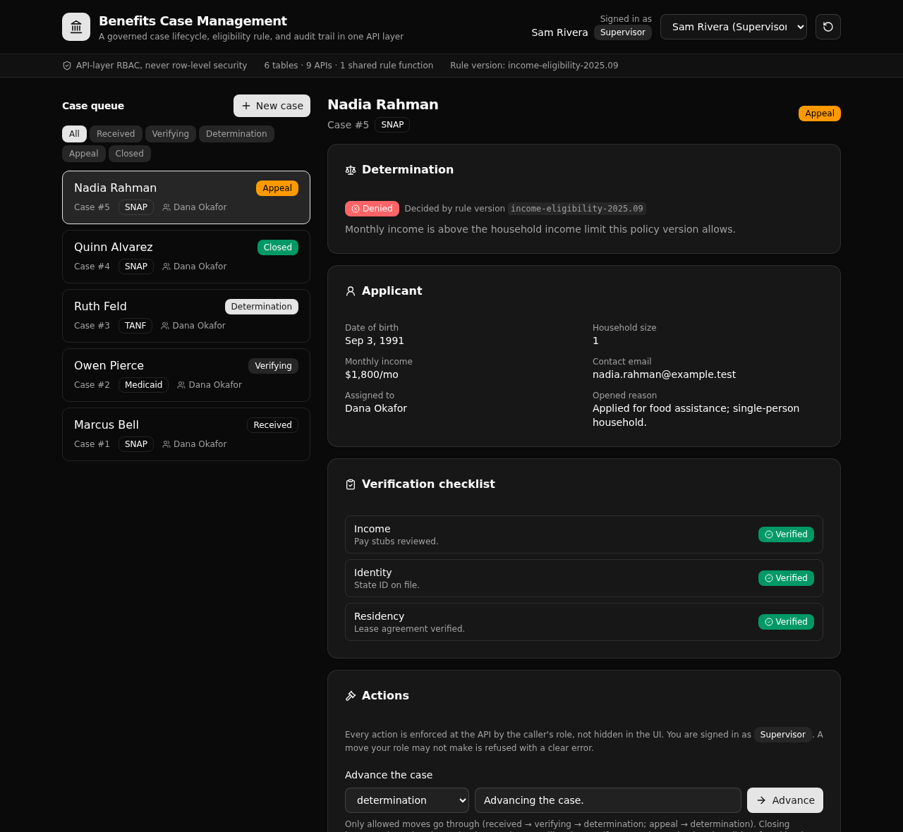

Each application becomes a case that moves through an enforced lifecycle. Role checks gate every step, one versioned rule decides each case, and every move is written to an audit trail. The kind of logic a legacy monolith holds today, in a backend an evaluator can read.

A case moves received, verifying, determination, closed, and a closed case can go to appeal and back. An illegal move (like received to closed) is refused at the API, and nothing is written.
A caseworker, a supervisor, and a viewer each get a different set of actions. The role check lives in each endpoint, reading the caller's own row. There is no row-level security.
A single shared function decides every case: all three checks verified, and income within the household limit. The determination is pinned to the rule version that produced it.
Every change writes one append-only event: who acted, their role, the status it moved from and to, and why. The history of a case is whatever that table holds for it, in order.
| Endpoint | Who | What it enforces |
|---|---|---|
POST /api:auth/login | public | Verifies the password and mints a bearer token. |
POST /api:cases/intake | caseworker | Matches or creates an applicant, opens a case in received. |
GET /api:cases/list | any role | The queue, filterable by status and assignee. |
GET /api:cases/get/{case_id} | any role | One case with its checks, determination, and full history. |
POST /api:cases/advance | caseworker, supervisor | A legal transition only, else a clear error and no write. |
POST /api:verifications/record | caseworker | Records a check while the case is verifying. |
POST /api:determinations/decide | supervisor | Runs the shared rule and closes the case on the outcome. |
POST /api:appeals/file | caseworker, supervisor | Moves a denied, closed case back to appeal. |
GET /api:seed/seed | public | Resets and reseeds the sample data. |
A React app that calls these endpoints and shows the governed result. It derives every path and type from the backend defs, so the client cannot drift from the API.
Clone it and deploy your own live copy in about a minute, or hand the prompt below to a coding agent to start a new backend from this shape.
git clone https://github.com/xano-scratch/benefits-case-management-backend
cd benefits-case-management-backend
npm install
npx xanots login
npm run xano:deployStart a new Xano backend from the XanoTS template at
https://github.com/xano-scratch/benefits-case-management-backend.
Clone it, run `npm install`, then `npx xanots login` and
`npm run xano:deploy` to get a live environment. Author strictly against
node_modules/@xanots/sdk/llms.txt. Keep the pattern this template proves:
a role-gated state machine, one shared versioned rule, and an append-only
audit trail, with API-layer RBAC and never row-level security. Adapt the
tables, endpoints, and rule to my domain.